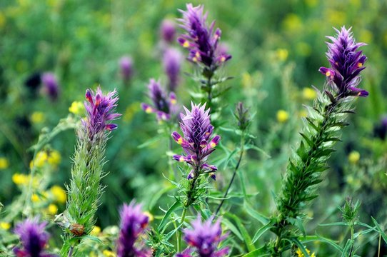

Echinacear
Scientific Name: Echinacea purpurea
Uses: immune support and to reduce cold duration.
Astragalus
Scientific Name: Astragalus membranaceus
Uses: mmune boost and to increase vitality

Turmeric
Scientific Name: Curcuma longa
Uses: anti-inflammatory relief and immune support.

Ginger
Scientific Name: Zingiber officinale
Uses: Ginger is used for digestive relief and anti-inflammatory support

Garlic
Scientific Name: Allium sativum
Uses: Garlic is used for immune support and cardiovascular health.

Andrographis
Scientific Name: Andrographis paniculata
Uses: Andrographis is used for immune enhancement and fever reduction

Elderberry
Scientific Name: Sambucus nigra
Uses: Cold and Flu Relief,Immune Support